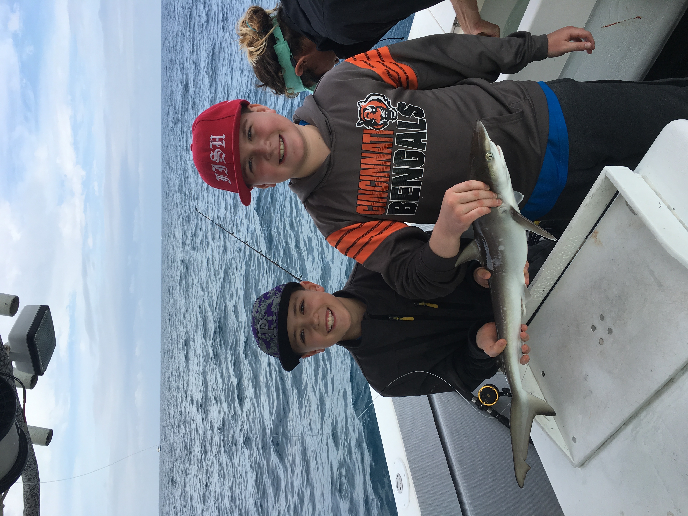
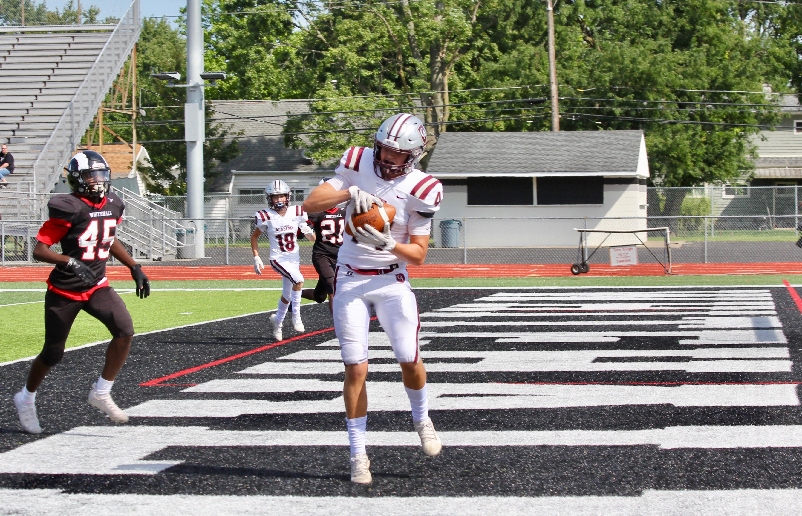

About Me
 |
 |
Some Things About Me
This is about me, Ryne Whitt (RIEN WIT).
I am new to Columbus Academy this year and I am a sophmore. I spent my freshman year attending Pickerington North High School. I play lacrosse for the Haymakers and I play football. I also enjoy boating, fishing, and just being on the water in general. I have never taken a computer science class before and I am excited to learn more about computers and how they work.
